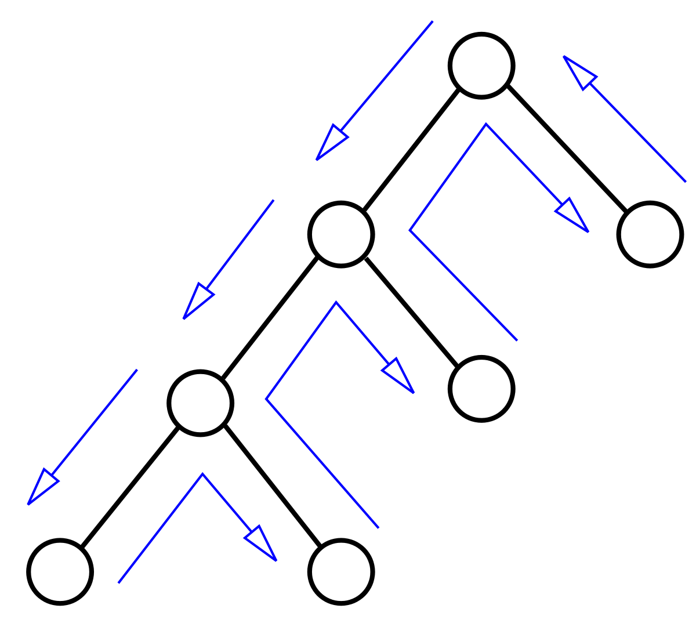

|  |
Despre metoda:
Backtracking este numele unui algoritm general de descoperire a tuturor soluțiilor unei probleme de calcul, algoritm ce se bazează pe construirea incrementală de soluții-candidat, abandonând fiecare candidat parțial imediat ce devine clar că acesta nu are șanse să devină o soluție validăTehnica backtracking se poate aplica doar pentru probleme ce admit conceptul de „candidat parțial de soluție” și oferă un test relativ rapid asupra posibilității ca un astfel de candidat să fie completat către o soluție validă. Când se poate aplica, însă, backtrackingul este adesea mult mai rapid decât căutarea prin metoda forței brute prin toți candidații, întrucât este capabilă să elimine dintr-un singur test un mare număr de candidați.
Backtrackingul este util la rezolvarea unor probleme de satisfacere a constrângerilor, cum ar fi cuvintele încrucișate, jocuri de sudoku și alte probleme similare. Ea stă la baza unei serii de limbaje de programare logică, cum ar fi Icon, Planner și Prolog.
|